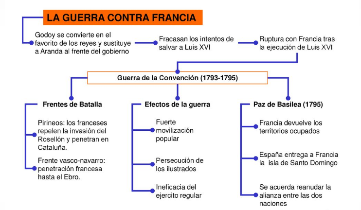
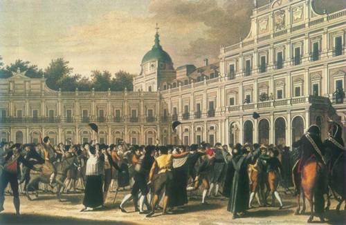
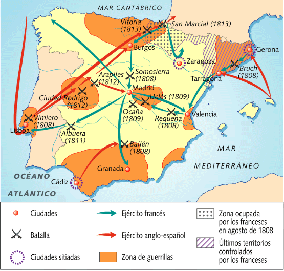
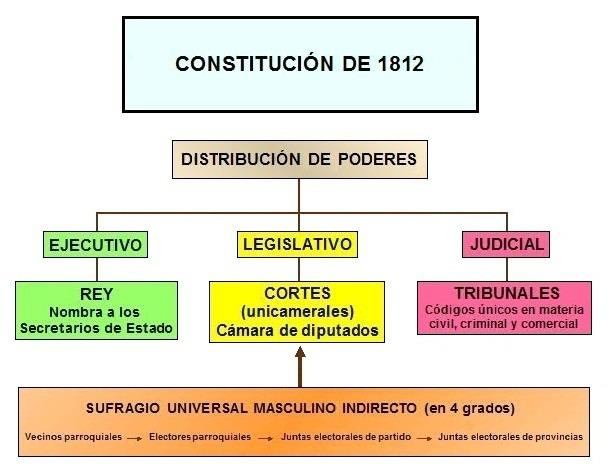

Tema 1: La Crisis del Antiguo Régimen (1788 - 1833)
La transición de España hacia la Edad Contemporánea: de la monarquía absoluta al primer intento de revolución liberal.

1. Antiguo Régimen versus Liberalismo
El periodo comprendido entre 1788 y 1833 representa para España el choque frontal entre dos mundos y modelos de sociedad opuestos. Por un lado, las viejas estructuras del Antiguo Régimen, que se resisten a desaparecer; por otro, la propuesta del Liberalismo, que busca transformar a los antiguos vasallos en ciudadanos de pleno derecho y establecer una sociedad moderna e industrial.
 Imagen 1: Comparación de los modelos político, social y económico del Antiguo Régimen frente al Liberalismo (Esquema didáctico por Daniel Gómez Valle).
Imagen 1: Comparación de los modelos político, social y económico del Antiguo Régimen frente al Liberalismo (Esquema didáctico por Daniel Gómez Valle).
Para comprender la profundidad de este cambio histórico que sentará las bases del siglo XIX español, analizamos las diferencias esenciales entre ambos sistemas en tres ámbitos:
- Ámbito Político: El Antiguo Régimen se basa en la soberanía real de derecho divino, donde el monarca concentra todos los poderes del Estado de forma ilimitada. El Liberalismo defiende que la soberanía reside en la Nación (Soberanía Nacional), plasmada en una Constitución y estructurada mediante la división de poderes (legislativo, ejecutivo y judicial) en un Estado de derecho.
- Ámbito Social: La sociedad estamental tradicional divide a la población por nacimiento en grupos privilegiados (nobleza y clero, exentos de pagar impuestos y con leyes propias) y no privilegiados (tercer estado o pueblo llano). El Liberalismo propone una sociedad de clases basada en el mérito y la riqueza, donde se garantiza la igualdad ante la ley de todos los ciudadanos.
- Ámbito Económico: Frente a una economía fuertemente intervenida por el Estado, con tierras amortizadas en manos de la Iglesia o la nobleza (bienes de manos muertas y mayorazgos) y mercados regulados por los gremios, el Liberalismo defiende el libre mercado, la propiedad privada libre y desvinculada, la garantía de la competencia y la supresión de aduanas interiores.
💡 Conceptos Clave
• Propiedad Amortizada: Tierras vinculadas a una institución (Iglesia, municipios, nobleza) que no se podían comprar, vender ni repartir, permaneciendo de forma permanente fuera del mercado libre.
• Estado de Derecho: Organización política donde la ley escrita (la Constitución) está por encima de cualquier autoridad, obligando a gobernantes y ciudadanos a cumplirla por igual.
2. El Reinado de Carlos IV (1788-1808) y el Colapso de la Monarquía
En 1788 falleció Carlos III y ascendió al trono su hijo, Carlos IV. Bajo su reinado se inició el desmoronamiento de las estructuras del Antiguo Régimen en España. Con Carlos IV fracasaron las políticas de reforma ilustradas iniciadas en tiempos de su padre, arrastradas por frecuentes crisis internacionales, la bancarrota económica y las luchas por el control de la Corona.
 Imagen 2: Retrato del monarca Carlos IV de Borbón (Detalle de la obra de Francisco de Goya).
Imagen 2: Retrato del monarca Carlos IV de Borbón (Detalle de la obra de Francisco de Goya).
El Impacto de la Revolución Francesa (1789)
El estallido de la Revolución Francesa en 1789 conmocionó a la corte española. Ante el temor de que las ideas liberales se propagaran por España, el Secretario de Estado, conde de Floridablanca, ordenó el cierre absoluto de las fronteras con Francia (el llamado cordón sanitario), prohibió la entrada de libros e impresos franceses y reactivó el tribunal de la Inquisición para vigilar y censurar las publicaciones.
Floridablanca fue relevado por el conde de Aranda, quien intentó mantener una postura de neutralidad frente a la posible guerra contra la Francia revolucionaria y republicana. Sin embargo, tras la ejecución en la guillotina del rey Borbón francés Luis XVI en 1793, España dio un giro drástico y declaró la guerra a la República Francesa, iniciándose la Guerra de la Convención (1793-1795).
El Ascenso de Manuel Godoy y la Guerra de la Convención
Carlos IV confió la dirección del gobierno a Manuel Godoy, un joven de corps que se convirtió de forma fulminante en primer ministro y valido del rey. Godoy firmó con Gran Bretaña su adhesión a la coalición antifrancesa. Sin embargo, el ejército español deparó una notable ineficacia y las tropas de la Convención francesa invadieron el norte peninsular (País Vasco, Navarra y Cataluña).
 Imagen 3: Mapa de operaciones de la Guerra de la Convención (1793-1795). Las tropas francesas cruzaron los Pirineos y penetraron en tierras españolas.
Imagen 3: Mapa de operaciones de la Guerra de la Convención (1793-1795). Las tropas francesas cruzaron los Pirineos y penetraron en tierras españolas.
Para frenar el avance francés, Godoy se vio obligado a firmar la Paz de Basilea (1795), por la que España recuperaba sus territorios peninsulares ocupados a cambio de ceder a Francia la isla de Santo Domingo y otorgar concesiones comerciales. Este deparó a Godoy el título de Príncipe de la Paz.

Imagen 4: Esquema metodológico de las causas, frentes y efectos de la Guerra contra la Francia Revolucionaria.La Alianza con Francia y el desastre de Trafalgar (1805)
En 1796, mediante el Tratado de San Ildefonso, Godoy dio un vuelco radical a la política exterior española y optó por la alianza con la Francia revolucionaria para hacer frente a la amenaza británica en las colonias americanas. Esta sumisión de España a los planes de Napoleón tuvo consecuencias desastrosas:
 Imagen 5: Ilustración didáctica de la Batalla de Trafalgar (1805), donde la escuadra británica impuso su superioridad naval.
Imagen 5: Ilustración didáctica de la Batalla de Trafalgar (1805), donde la escuadra británica impuso su superioridad naval.
- Tratados de San Ildefonso (1796-1800): En el *Segundo Tratado de San Ildefonso*, España cedió a Francia la Luisiana a cambio de salvaguardar territorios de sus familiares en Italia.
- Guerra de las Naranjas (1801): Bajo presión francesa, España declaró la guerra a Portugal a causa de la de sumarse al bloqueo continental contra Inglaterra. Godoy lideró una breve campaña militar de dieciocho días en la que ocupó la plaza de Olivenza, que quedó bajo soberanía española.
- La derrota de Trafalgar (1805): La escuadra franco-española fue completamente destruida por la flota británica del almirante Nelson cerca de las costas de Cádiz. España se quedó sin armada y las colonias americanas quedaron incomunicadas con la metrópoli, desatando una profunda crisis económica.
⚠️ Crisis de la Hacienda y Desamortización de 1798
La interrupción del comercio americano por el bloqueo británico disparó el déficit del Estado. Para conseguir recursos urgentes para la Hacienda Real, Godoy puso en marcha la desamortización de 1798, expropiando y vendiendo en pública subasta las propiedades agrícolas vinculadas al clero (bienes de manos muertas). Esta medida no logró salvar las cuentas del Estado pero sí granjeó a Godoy la oposición de la nobleza, de la Iglesia y del propio príncipe heredero Fernando.
Fontainebleau y el Motín de Aranjuez (1808)
En 1807, Godoy firmó con Napoleón el Tratado de Fontainebleau, que autorizaba a los ejércitos napoleónicos a atravesar España para invadir conjuntamente Portugal. Con esta excusa, las tropas francesas penetraron en la Península y ocuparon ciudades clave (Barcelona, Pamplona, San Sebastián). El tratado contemplaba una cláusula de reparto por la que Portugal se dividiría en tres partes, una de ellas para Manuel Godoy como principado personal. Alarmado ante lo que parecía una invasión real, Godoy decidió trasladar a la familia real hacia el sur, con la intención de viajar a Andalucía y embarcar hacia América.
Al de el rumor del viaje, el 18 de marzo de 1808 estalló el Motín de Aranjuez. Se trató de una revuelta aparentemente popular pero dirigida y financiada en la sombra por la alta nobilidad del Partido Fernandino. La multitud asaltó el palacio de Godoy y obligó a Carlos IV a destituir a su valido y a abdicar en su primogénito, Fernando VII.

Imagen 6: Pintura histórica del estallido del Motín de Aranjuez frente al palacio de Manuel Godoy en marzo de 1808.3. La Guerra de la Independencia (1808-1814)
Carlos IV escribió secretamente a Napoleón protestando por los sucesos de Aranjuez y reclamando su ayuda para recuperar el trono. Ante la profunda crisis política y las disputas de la familia real española, Napoleón reunió a padre e hijo en la localidad francesa de Bayona.
Las Abdicaciones de Bayona y José I Bonaparte
En las Abdicaciones de Bayona, Napoleón obligó a Fernando VII a renunciar al trono a favor de Carlos IV, y a este a ceder todos sus derechos a la corona de España directamente al emperador francés a cambio de dinero y tierras. Napoleón nombró a su hermano mayor, José I Bonaparte, rey de España, y promulgó el Estatuto de Bayona (1808), una carta otorgada reformista que establecía una monarquía limitada y reconocía la igualdad jurídica de los españoles.
 Imagen 7: Caricatura satírica británica de Isaac Cruikshank sobre las abdicaciones de Bayona, donde Napoleón sopla una burbuja con la corona española.
Imagen 7: Caricatura satírica británica de Isaac Cruikshank sobre las abdicaciones de Bayona, donde Napoleón sopla una burbuja con la corona española.
Para la mayoría de los españoles, la nueva monarquía era ilegítima y extranjera. El país se dividió socialmente:
- Los Afrancesados: Intelectuales, altos funcionarios y parte de la nobleza que apoyaron a José I, convencidos de que las reformas ilustradas de los franceses eran la única vía pacífica para modernizar España.
- El Frente Patriótico: La inmensa mayoría de la población (clero, nobleza, ilustrados y liberales) que se opuso a la ocupación y defendió la soberanía y la vuelta de Fernando VII.
El Levantamiento del 2 de Mayo de 1808
Ante la inminente salida del palacio de los últimos miembros de la familia real hacia Francia, el 2 de mayo de 1808 estalló una rebelión popular espontánea en Madrid. Los madrileños se enfrentaron a las patrullas francesas. A la resistencia popular se sumaron militares españoles del cuartel de Moncloa dirigidos por Daoíz y Velarde.
La sublevación fue duramente reprimida por el general francés Murat, quien ordenó el fusilamiento sistemático de cientos de rebeldes en la colina de la Moncloa y el Paseo del Prado durante la noche del 2 y la madrugada del 3 de mayo, inmortalizado por Francisco de Goya. La noticia de la masacre extendió la rebelión armada por toda España.
🇮🇨 Canarias ante la Crisis de 1808: La Junta Suprema de Canarias
El archipiélago canario no llegó a ser ocupado militarmente por las tropas de Napoleón, pero al conocerse las abdicaciones de Bayona y el levantamiento popular del verano de 1808, se reaccionó con idéntico espíritu de resistencia. En San Cristóbal de La Laguna (Tenerife) se constituyó la histórica Junta Suprema de Canarias, con el fin de asumir el gobierno provisional, organizar la defensa militar y asegurar la fidelidad a Fernando VII.
La constitución de la Junta no estuvo exenta de severas tensiones territoriales. Aunque fue reconocida inicialmente en varias islas, el Cabildo de Gran Canaria rechazó la hegemonía tinerfeña y creó en 1808 su propia institución rival, el Cabildo Permanente de Gran Canaria. Este choque reavivó de forma temprana el pleito insular por el control político del archipiélago, hasta que la Junta Central Suprema peninsular disolvió ambos organismos en 1809 para restablecer la autoridad del Capitán General.
Asimismo, la aportación canaria a la Guerra de la Independencia se materializó con el envío a la Península de contingentes de los Regimientos de Infantería de Canarias. Estas tropas insulares integraron el Ejército regular español y tuvieron una destacada y cruenta participación en batallas cruciales del conflicto, como la Batalla de Talavera (1809).
Las Fases de la Guerra de la Independencia
La Guerra de la Independencia se convirtió en un conflicto internacional (entre las fuerzas francesas y la alianza anglo-española del duque de Wellington), en una guerra civil (patriotas contra afrancesados) y en un proceso revolucionario político plasmado en las Cortes de Cádiz. Provocó una enorme catástrofe humana, con una cifra estimada de medio millón de muertos sobre una población peninsular de apenas 11 millones de habitantes.

Imagen 8: Cartografía didáctica con los frentes, asedios, guerrillas y trayectos militares de la Guerra de la Independencia. Imagen 9: Esquema conceptual de las tres grandes frentes de la Guerra de la Independencia (Daniel Gómez Valle).
Imagen 9: Esquema conceptual de las tres grandes frentes de la Guerra de la Independencia (Daniel Gómez Valle).
🛡️ Primera Fase (Mayo - Noviembre de 1808): Resistencia inicial
Los franceses intentaron asegurar un corredor de comunicación rápido entre Madrid y la frontera para controlar el país. Sin embargo, se toparon con una tenaz resistencia urbana en asedios heroicos como Zaragoza (liderada por el general Palafox) y Gerona.
El hecho militar más trascendental fue la Batalla de Bailén (19 de julio de 1808), en Jaén, donde un improvisado ejército regular español al mando del general Castaños derrotó a las experimentadas tropas imperiales del general Dupont. Esta sorprendente derrota asestó un durísimo golpe de prestigio a Napoleón, forzando a José I a evacuar Madrid y obligando a los franceses a replegarse al norte del Ebro.
🏔️ Segunda Fase (Noviembre de 1808 - Julio de 1812): El apogeo francés y las Guerrillas
Napoleón intervino personalmente en España al frente de la Grande Armée, un colosal ejército de 250.000 de soldados veteranos profesionales. Tras derrotar a las fuerzas españolas, recuperó Madrid y reinstaló a su hermano en el trono. Las tropas francesas ocuparon casi toda la Península, exceptuando la cercada ciudad de Cádiz, libre gracias a su posición y al apoyo de la flota británica.
La Guerra de Guerrillas: Ante la imposibilidad de derrotar a los franceses en campo abierto, el pueblo se organizó en pequeñas partidas locales de civiles armados dirigidas por líderes como Espoz y Mina, Juan Martín El Empecinado o el Cura Merino. Las guerrillas asaltaban convoyes, destruían las líneas de suministro y hostigaban por sorpresa, obligando al ejército invasor a dispersarse e impidiéndole un control efectivo del territorio.
🇬🇧 Tercera Fase (Julio de 1812 - 1814): La ofensiva anglo-española
En 1812, Napoleón se vio obligado a retirar a miles de soldados veteranos de la Península para su catastrófica campaña militar en Rusia. Los ejércitos españoles, estrechamente apoyados por las tropas inglesas del general Wellington (enviado para proteger Portugal), lanzaron una gran contraofensiva.
Tras la decisiva victoria en la Batalla de Arapiles (Salamanca) en 1812, José I huyó de Madrid. El de los franceses se consumó tras las derrotas en las batallas de Vitoria y San Marcial (1813). Napoleón, acorralado en múltiples frentes en Europa, firmó con Fernando VII el Tratado de Valençay (diciembre de 1813), restituyéndole la Corona española de forma incondicional.
4. Las Cortes de Cádiz y la Constitución de 1812
La de la familia real de España y la invasión napoleónica generaron un absoluto vacío de poder en las Jelas sublevadas. Los ciudadanos patriotas se organizaron de forma espontánea y crearon Juntas locales e independientes asumidas por representantes influyentes del clero, la nobleza y las clases medias. Para unificar la resistencia, se creó la Junta Central Suprema.
Ante el avance imparable de las tropas francesas en 1810, los miembros de la Junta Suprema Central tuvieron que refugiarse en Cádiz, la única ciudad que se mantenía independiente del control invasor gracias al apoyo de la marina inglesa. La Junta decidió disolverse en enero de 1810, traspasando el de forma temporal a un Consejo de Regencia de cinco miembros, el cual convocó la reunión de las Cortes Generales y Extraordinarias.
 Imagen 10: Mapa con el origen territorial de los diputados que formaron las Cortes gaditanas.
Imagen 10: Mapa con el origen territorial de los diputados que formaron las Cortes gaditanas.
A diferencia de las Cortes históricas tradicionales, divididas en estamentos feudales, los diputados liberales consiguieron un éxito revolucionario: las Cortes de Cádiz se abrieron en septiembre de 1810 en la Isla de León (San Fernando) como una asamblea única unicameral, donde cada diputado ostentaba la representación de toda la nación y su voto valía por igual. En la sesión inaugural del 24 de septiembre de 1810, firmaron su primer decreto proclamando que la soberanía residía en la Nación de forma natural e irrenunciable.
Composición de las Cortes y Corrientes de Opinión
La dificultad para viajar en tiempos de guerra hizo que muchos diputados de las provincias ocupadas no pudieran llegar a Cádiz, siendo sustituidos por suplentes que residían en la ciudad gaditana. Esto deparó una composición de mayoría liberal y burguesa. De los más de 270 diputados, el grupo profesional más numeroso estaba integrado por eclesiásticos (90 diputados), seguidos de abogados (56) y funcionarios (49). La presencia de la alta nobleza (14) y de las clases populares agrarias era irrelevante o nula.
Entre los diputados se perfilaron tres corrientes de opinión:
- Los Liberales: Defensores de reformas revolucionarias de inspiración francesa y partidarios de otorgar la soberanía exclusiva a las Cortes nacionales. Estuvieron representados por grandes oradores civiles y clérigos como Agustín de Argüelles (padre de la constitución), el conde de Toreno, y el extremeño Diego Muñoz Torrero.
- Los Jovellanistas o Renovadores: Liderados de forma intelectual por Gaspar Melchor de Jovellanos, abogaban por un régimen intermedio y una soberanía compartida entre el rey y unas Cortes estamentales históricas.
- Los Absolutistas o Serviles: Defendían la vuelta plena al Antiguo Régimen y pretendían que la soberanía de la nación residiera de manera exclusiva en la figura del monarca.
La Constitución de 1812 (La Pepa)
El 19 de marzo de 1812, las Cortes extraordinarias promulgaron la primera constitución liberal de la historia de España, conocida popularmente como La Pepa. Sus 384 de artículos estructuraron un nuevo marco político y social. Para presentarse como candidato a diputado era requisito constitucional poseer una renta anual procedente de bienes propios.

Imagen 11: Esquema organizativo de la distribución de poderes legislativo, ejecutivo y judicial según la Constitución de 1812.📜 Los Pilares de La Pepa (1812)
- Soberanía Nacional: El poder supremo reside en la Nación (el conjunto de ciudadanos de ambos hemisferios) y no en la figura del monarca de origen divino.
- División de Poderes: El poder legislativo residía en las Cortes de asamblea única junto al rey; el ejecutivo quedaba dividido entre el monarca y sus ministros gubernamentales; y el judicial correspondía en exclusiva a tribunales independientes. El rey dejaba de ser absoluto para convertirse en monarca parlamentario.
- Sufragio Universal Masculino Indirecto: El sistema de votación masculina indirecto en varios grados parroquia, partido, provincia y Cortes.
- Derechos y Libertades Individuales: Se reconoció por ley la igualdad jurídica ante la ley de todos los españoles (peninsulares y americanos), el derecho a la propiedad privada, la inviolabilidad del domicilio y la libertad de imprenta.
- Confesionalidad Católica: Se decretó que la religión católica era la única verdadera de la Nación española, prohibiéndose taxativamente el ejercicio de cualquier otro culto.
La Acción Legislativa de Cádiz: El Fin del Antiguo Régimen
Además de redactar la Constitución de 1812, los diputados gaditanos aprobaron leyes de calado socioeconómico destinadas a demoler el feudalismo tradicional de raíz:
- Supresión del Régimen Señorial: Se abolieron en 1811 los derechos de vasallaje y los señoríos jurisdiccionales. No obstante, la nobleza conservó casi todos sus bienes raíces porque sus viejas posesiones señoriales territoriales fueron convertidas legalmente en títulos de propiedad privada.
- Abolición de los Mayorazgos y Desamortización de 1812: Se decretó la libre venta de la propiedad y se expropiaron las tierras de los afrancesados considerados traidores, las de las órdenes militares disueltas y la mitad de los bienes municipales con el fin de hacer frente a la deuda del Estado.
- Abolición definitiva del tribunal de la Inquisición: Las Cortes decretaron el fin de la Inquisición por considerarla incompatible con los derechos y libertades recogidos en la Constitución.
- Impulso del Mercado Libre: Se decretó la abolición absoluta de los restrictivos gremios artesanales para dar paso a la libertad de industria y contratos, y se suprimieron los privilegios medievales de la ganadería trashumante de la Mesta sobre la agricultura.
5. El Reinado de Fernando VII (1814-1833)
Mitificado por el pueblo llano durante el exilio como el Deseado, el regreso de Fernando VII reabrió de forma violenta el choque político e institucional entre las viejas estructuras absolutistas del Antiguo Régimen y las nuevas aspiraciones del Liberalismo contemporáneo.
 Imagen 12: Las tres grandes etapas que vertebran el reinado de Fernando VII (Daniel Gómez Valle).
Imagen 12: Las tres grandes etapas que vertebran el reinado de Fernando VII (Daniel Gómez Valle).
👑 El Sexenio Absolutista (1814-1820)
Fernando VII desembarcó en Valencia en abril de 1814. Fortalecido por el apoyo de altos mandos militares absolutistas y por la entrega del Manifiesto de los Persas (escrito firmado por 69 diputados realistas que comparaba el periodo liberal con la anarquía de los antiguos persas e incitaba al restablecimiento de la monarquía absoluta), el rey traicionó sus promesas constitucionales.
Mediante el Real Decreto del 4 de mayo de 1814 (promulgado el 11 de mayo), el rey declaró nula la Constitución de 1812 y los decretos de Cádiz, y amenazó con la declaración de reo de lesa majestad y la pena de muerte a quien osase defenderlos.
Restableció de inmediato las instituciones tradicionales del Antiguo Régimen (Inquisición, Consejos señoriales, gremios, Mesta, privilegios fiscales nobiliarios y devolución de tierras expropiadas a la Iglesia). Asimismo, abolió la libertad de imprenta decretando el cierre total de las publicaciones.
La crisis fiscal de la Corona y los Pronunciamientos:
La represión estatal fue implacable contra los liberales y afrancesados, obligando al exilio de más de 12.000 familias hacia Londres o París. Paralelamente, el país pasaba por extremas dificultades financieras: la guerra había destruido las cosechas y la industria, mientras que el inicio de la emancipación en América mermó los ingresos de la Corona. Los sucesivos ministros de Hacienda intentaron realizar reformas moderadas imponiendo tributos sobre la nobleza y el clero, pero estas propuestas fueron rechazadas por las presiones de la camarilla cortesana que rodeaba al monarca.
El malestar fue capitalizado por oficiales liberales descontentos que, apoyados por sociedades masónicas secretas, recurrieron a la forma clásica de pronunciamiento militar:
- El pronunciamiento de Xavier Mina y Espoz y Mina en Pamplona (1814), que fracasó obligándoles a huir.
- El levantamiento de Juan Díaz Porlier en La Coruña (1815), héroe de guerra ejecutado en la horca tras fracasar.
- La clandestina Conspiración del Triángulo (1816) masónica para secuestrar al monarca y forzarle a jurar la Constitución.
- Los pronunciamientos militares de Lacy en Barcelona (1817) y de Joaquín Vidal en Valencia (1819), duramente reprimidos.
🎺 El Trienio Liberal (1820-1823)
El 1 de enero de 1820 triunfó la sublevación del teniente coronel Rafael del Riego al frente de las tropas acantonadas en Las Cabezas de San Juan (Sevilla), que esperaban con temor ser embarcadas rumbo a América. Riego proclamó la Constitución de 1812. Ante la pasividad militar del resto de guarniciones, Fernando VII capituló y juró de forma obligada la Constitución de Cádiz: "Marchemos francamente, y yo el primero, por la senda constitucional".
Reforma e inestabilidad del Trienio:
Durante el Trienio se recuperó la obra legislativa de Cádiz: amnistía para presos políticos, disolución de la Inquisición, eliminación de aduanas interiores, abolición gremial y desamortización de monasterios eclesiásticos. Sin embargo, los liberales se dividieron internamente en dos facciones doctrinarias:
- Moderados o Doceañistas: Partidarios de reformas suaves respetuosas con la tradición, querían de conceder más poder al monarca y crear una cámara parlamentaria de próceres (soberanía compartida). Martínez de la Rosa fue su personalidad más notable.
- Exaltados o Veinteañistas: Defendían reformas radicales basadas en la agitación popular en clubes políticos y la estricta aplicación de la Constitución de 1812. Su líder fue Evaristo San Miguel y ganaron las elecciones en 1822 con Riego al frente de las Cortes.
La invasión de los Cien Mil Hijos de San Luis:
La abolición del régimen señorial no mejoró de forma real la situación de los campesinos, que pasaron a convertirse en arrendatarios vulnerables ante los compradores de tierras burgueses, alejándoles del liberalismo. El clero rural y la nobleza, afectados por la pérdida del diezmo, alentaron revueltas y partidas armadas realistas en Navarra y Cataluña. La oposición absolutista creó en 1822 la Regencia de Urgell. Paralelamente, Fernando VII conspiraba pidiendo secretamente ayuda a la Santa Alianza absolutista europea.
En abril de 1823, un ejército militar francés enviado por Francia —los Cien Mil Hijos de San Luis al mando del duque de Angulema— invadió España y restauró el poder absoluto de Fernando VII, quien firmó de inmediato un manifiesto decretando nulas e inválidas todas las medidas de los liberales.
⛓️ La Década Ominosa (1823-1833)
La vuelta al absolutismo reabrió una feroz represión contra los partidarios de las ideas liberales. Se disolvió formalmente el Ejército y unos 22.000 de soldados franceses permanecieron en el país hasta 1828 para garantizar la estabilidad del trono. Asimismo, se acometió una depuración de funcionarios públicos y docentes.
Muchos de ellos como los generales Riego o Torrijos fueron ejecutados. En 1831, el general José María de Torrijos desembarcó en Málaga con la intención de realizar un pronunciamiento clandestino, siendo capturado y ejecutado de inmediato junto a sus 48 compañeros, entre los que figuraba el extremeño Francisco Fernández Golfín. Ese mismo año, la granadina Mariana Pineda fue ejecutada públicamente a garrote vil por el delito de bordar una bandera liberal. Hubo un censo de 286 mujeres liberales exiliadas por la represión. Cayetano Ripoll, maestro valenciano, fue la última víctima legal de las Juntas de Fe en 1826.
El Reformismo Moderado Económico:
La pérdida definitiva de las ricas colonias de América obligó a Fernando VII a abordar reformas materiales moderadas para paliar la bancarrota económica. El ministro de Hacienda, Luis López Ballesteros, implementó medidas de calado administrativo: reorganizó las cuentas del Estado fijando un estricto presupuesto anual, promulgó un código de comercio y creó la Bolsa de Madrid (1831) y el Banco de San Fernando.
Este tímido reformismo y la negativa de Fernando VII a reestablecer formalmente la Inquisición desataron el descontento y hostilidad del sector más intransigente y ultraabsolutista de la corte, que se levantó militarmente en Cataluña en 1827 en la revuelta de los Malcontents (Agraviados) exigiendo un absolutismo puro. Estos ultraconservadores se agruparon ideológicamente en torno al hermano del monarca, el infante Carlos María de Borbón, candidato natural ante la falta de herederos de Fernando VII.
El Conflicto Sucesorio y Dinástico (1830-1833):
En 1830, el nacimiento de la princesa Isabel (hija del monarca y su cuarta esposa, María Cristina de Borbón) deparó un vuelco en la sucesión. Hasta ese momento imperaba la Ley Sálica que impedía reinar a las mujeres, pero Fernando VII derogó esta limitación dinástica mediante la publicación de la Pragmática Sanción, abriendo el camino al trono a su hija.
Los partidarios de Carlos María de Borbón (Carlistas) se negaron a aceptar la situación. En el verano de 1832 presionaron gravemente al monarca enfermo en los Sucesos de La Granja para que repusiera la Ley Sálica, pero una vez recuperado Fernando VII la volvió a anular. La regente María Cristina comprendió que para salvar el trono para su hija Isabel debía aliar con los sectores liberales moderados, firmando amnistías para permitir el regreso de los exiliados políticos. Al morir Fernando VII en septiembre de 1833, don Carlos se proclamó rey, iniciándose un levantamiento absolutista en el norte de España: daba comienzo la Primera Guerra Carlista.
6. La Emancipación de las Colonias Americanas
Aprovechando el vacío de poder en España provocado por la invasión de Napoleón y la crisis de la Corona, los criollos americanos iniciaron de forma paralela un gran proceso independentista que culminó en la década de 1820 con la total independencia de la América hispana, exceptuando las Antillas (Cuba y Puerto Rico) y las Filipinas en Asia.
 Imagen 13: Cuadro didáctico con el análisis de las causas internas y externas del proceso emancipador.
Imagen 13: Cuadro didáctico con el análisis de las causas internas y externas del proceso emancipador.
Causas del movimiento independentista
- El descontento de las élites criollas: Los criollos representaban el grupo social más próspero económicamente. Sin embargo, tenían prohibido por ley el acceso a los principales cargos políticos y administrativos coloniales, reservados exclusivamente a peninsulares elegidos por Madrid.
- Monopolio y restricciones comerciales: La rígida política de comercio de España obligaba a las colonias a comercializar únicamente con la metrópoli, perjudicando los intereses de la burguesía criolla que buscaba comercializar libremente con potencias de mayor dinamismo industrial como Gran Bretaña.
- La influencia ideológica y ejemplos de libertad: La difusión de las ideas de libertad e igualdad del Liberalismo y la Ilustración, el ejemplo de la Independencia de los Estados Unidos (1776) y la Revolución Francesa sirvieron como ejemplo e impulso moral.
- La debilidad militar hispana: Las derrotas navales del cabo de San Vicente y de Trafalgar destruyeron la armada de la Corona española, imposibilitando la defensa y la comunicación efectiva de las colonias.
Los movimientos populares comuneros en Nueva Granada en el siglo XVIII o la gran revuelta indígena dirigida por Túpac Amaru II en 1781 sirvieron como los primeros antecedentes.
Fases de las Guerras de Independencia
La emancipación se extendió por todo el continente, impulsada por campañas militares y dividida en tres grandes fases históricas:
 Imagen 14: Mapa cronológico de las grandes campañas militares libertadoras por Sudamérica.
Imagen 14: Mapa cronológico de las grandes campañas militares libertadoras por Sudamérica.
- La Etapa de las Juntas (1808-1814): Ante el vacío de poder creado por la contienda peninsular contra Napoleón, se formaron de forma espontánea ricas Juntas de Gobierno leales a Fernando VII en Buenos Aires, Santiago de Chile, Bogotá y Caracas. Sin embargo, los criollos sustituyeron a los peninsulares y pronto aprovecharon para virar hacia declaraciones explícitas de independencia, proclamándose la de Paraguay y de las Provincias Unidas del Río de la Plata.
- La Reacción Absolutista (1814-1820): Tras regresar al poder absoluto, el gobierno de Fernando VII, en vez de proponer acuerdos autonómicos, respondió militarmente con la expedición militar de un ejército de 10.000 hombres, reconquistando temporalmente los focos de resistencia. No obstante, la intransigencia alimentó la causa independentista. El general José de San Martín atravesó los Andes, derrotó a los españoles en la batalla de Chacabuco (1817) y selló la independencia de Chile (1818).
- La Ofensiva Aliada Final (1820-1824): El triunfo del pronunciamiento liberal de Rafael del Riego en España en 1820 interrumpió el envío de de refuerzos militares a América. Los criollos realistas de México se pasaron al bando independentista, logrando Agustín de Iturbide independizar México en 1821. En el norte de Sudamérica, Simón Bolívar derrotó de forma decisiva a los realistas en las batallas de Boyacá (1819) y Carabobo (1821), fundando la Gran Colombia. Finalmente, la contienda concluyó en el sur tras la gran victoria de las de dirigidas por el general Sucre en la decisiva Batalla de Ayacucho (1824), desmoronando definitivamente el poder español en el continente.
 Imagen 15: Esquema de síntesis histórica de las causas, procesos y consecuencias de las independencias (Daniel Gómez Valle).
Imagen 15: Esquema de síntesis histórica de las causas, procesos y consecuencias de las independencias (Daniel Gómez Valle).
Para 1826, España había perdido la totalidad de sus colonias americanas, exceptuando Cuba, Puerto Rico y las Filipinas. En 1823, el presidente estadounidense James Monroe formuló la Doctrina Monroe (bajo el lema de "América para los americanos"), proclamando de forma implícita su intención geopolítica de sustituir el viejo dominio colonial español en beneficio de los de los Estados Unidos.